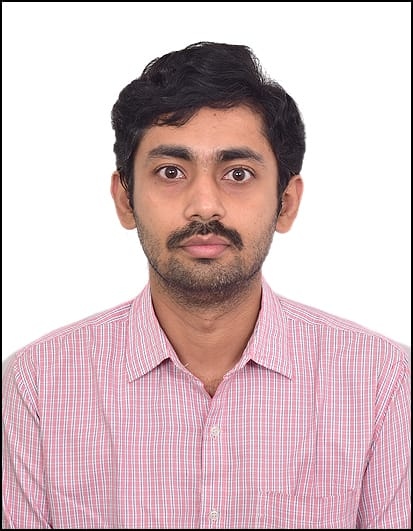

Dr. Abhishek H R
Hybrid Neurosurgeon
Hybrid Neurosurgeon · Bengaluru, India
Comprehensive care for brain, spine, stroke & neurointervention
I am a hybrid neurosurgeon specialized in Brain & Spine Surgery and Stroke & Neurointervention. My approach combines careful clinical assessment, clear communication and the thoughtful suggestion of surgery and minimally invasive treatments.
My interest in neurosurgery began during my General Surgery training. I was fascinated by the way clinical examination, anatomy and physiology come together to identify problems in the nervous system. The complexity, precision and problem-solving involved in neurosurgery led me to pursue it as my specialty.
Over time, I developed a particular interest in minimally invasive treatment. Neurointervention brought together my interests in technology, precision and minimally invasive surgery, allowing certain conditions to be treated through blood vessels without the conventional open approach.
I believe patients should understand their condition before making decisions about treatment. I try to explain complex medical problems in simple language and recommend treatment based on what is appropriate for the individual patient. Whenever possible, I believe in avoiding unnecessary major procedures and choosing minimally invasive options when they are appropriate and safe.
To me, a diagnosis is not the end of the road. It is a stepping stone towards a better future.
I am also passionate about making medical knowledge easier to understand. Through educational content, I hope to explain diseases and medical concepts in a way that is simple, relatable and occasionally a little fun.

Dr. Abhishek is actively involved in medical education and academic research. His focus is on helping patients and families understand their condition and treatment options clearly, while contributing to neurosurgical knowledge through teaching, research and publications.